Настройка сети в Ubuntu Server 16.04.4 LTS
2018-05-20 first deer2 комментария к записи Настройка сети в Ubuntu Server 16.04.4 LTS
В этой статье мы рассмотрим сетевые интерфейсы в Ubuntu Server, покажем настройку сети через файл конфигурации /etc/network/interfaces, а именно назначение статических настроек и получение их по DHCP. Пропишем адреса DNS-серверов, настроем hosts и рассмотрим указание временных настроек сети.
Для начала проясним: Есть два состояния сетевой карты UP(задействована) и DOWN(не задействована).
Первым делом стоит посмотреть видна ли наша сетевая карта, смотреть будем командой ifconfig.(Рис.1) Вывод команды показывает только интерфейсы UP.
ifconfig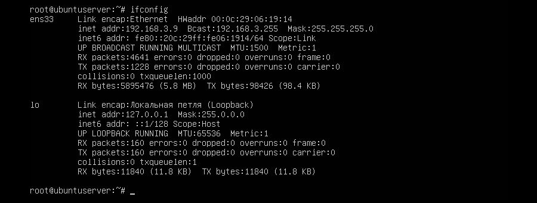Рис.1 - Результат ввода команды Ifconfig.
И так что же мы видим:
В дальнейшем я буду показывать примеры настройки на интерфейсе "ens33".
Но у вас может быть не так, к примеру отобразится только интерфейс "lo", тогда нам пригодится команда ifconfig -a.
Команда ifconfig -a покажет нам все интерфейсы и UP и DOWN. Вводим и видим что у нас есть не настроенный сетевой интерфейс "ens38".(Рис.2)
ifconfig -a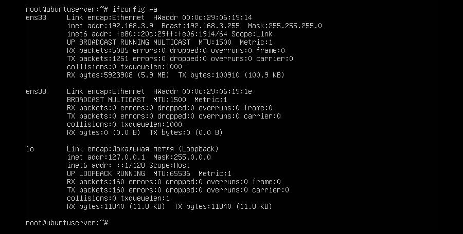Рис.2 - Результат ввода команды Ifconfig -a.
Альтернативой команде ifconfig -a могут послужить две другие команды:
ip link show
ip link show покажет вам даже состояние интерфейса "state UP mode" и "state DOWN mode".(Рис.3)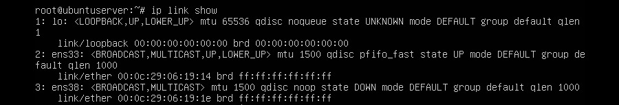Рис.3 - Результат ввода команды ip link show.
lshw -C network | grep name
lshw -C network | grep name - покажет вам имена всех интерфейсов исключая "lo".(Рис.4)Рис.4 - Результат ввода команды lshw -C network | grep name.
Для того чтобы включить интерфейс используется команда ifup с указанием интерфейса ens38,
ifup ens38
а, чтобы выключить ifdown.
ifdown ens38
Настройка сети через файл конфигурации.
Для настройки статического или динамического IP адреса нам надо отредактировать файл конфигурации сетевых интерфейсов - /etc/network/interfaces мы будем редактировать его с помощью текстового редактора nano.(Рис.5) Сразу скажу что для того чтобы сохранить документ в nano надо нажать "Ctrl+o", а чтобы закрыть "Ctrl+x".
nano /etc/network/interfaces
Если вы авторизованы не под root, не забудьте добавить sudo и ввести пароль суперпользователя, а то не получится сохранить измененный файл interfaces.
sudo nano /etc/network/interfacesРис.5 - Команда для редактирования файла /etc/network/interfaces.
Получение настроек сети по DHCP.
Для получения настроек сети по DHCP, в файле /etc/network/interfaces достаточно указать всего две строки.(Рис.6)
auto ens33
iface ens33 inet dhcp
Лично у меня они были написаны по умолчанию, так как сеть была настроена при установке. Пояснения в пункте Описание опций.
Если у вас не запущен DHCP клиент, то запустить его можно командой dclient с указанием интерфейса ens33.
dclient ens33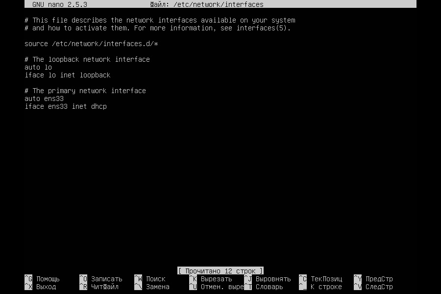Рис.6 - Файл конфигурации /etc/network/interfaces для получения настроек сети по DHCP.
Указание настроек сети вручную.
Пишем конфигурацию интерфейса для статичного IP адреса.(Рис.7)
auto ens33
iface ens33 inet static
address 192.168.3.209
netmask 255.255.255.0
gateway 192.168.3.1
dns-nameservers 8.8.8.8 192.168.3.1
dns-search itdeer.loc itdeer.ru
Пояснения в пункте Описание опций.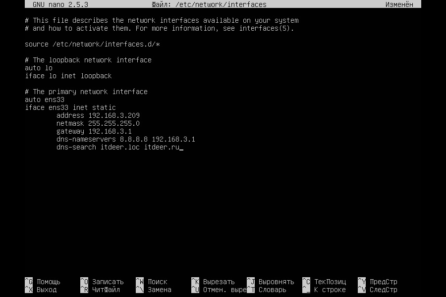Рис.7 - Файл конфигурации /etc/network/interfaces для указания настроек сети вручную..
Рассмотрим описание опций, для того чтоб вы понимали что написано в пунктах Получение настроек по DHCP и Указание настроек сети вручную.
После редактирования файла /etc/network/interfaces, применить изменения можно двумя способами:
Первый - Перезагрузить систему.
reboot
или
init 6
Второй - Если же вы не хотите перезагружать систему, то нужно сначала отчистить конфигурацию интерфейса,
ip addr flush ens33
а после перезапустить службу сети.
service networking restart
Если вы сменили только шлюз по умолчанию, настройки DNS серверов или суффиксов, то достаточно просто перезапустить сетевую службу.
service networking restart
Далее смотрите вывод команды ifconfig, изменения должны должны быть применены.
Указание DNS-серверов в файле /etc/resolv.conf.
IP адреса DNS-серверов можно указать, как в файле /etc/network/interfaces, так и в /etc/resolv.conf.[Как это делается в файле /etc/network/interfaces мы уже рассмотрели, так что здесь мы рассмотрим указание DNS-серверов в файле - /etc/resolv.conf]
Открываем resolv.conf в редакторе nano.(Рис.8)
nano /etc/resolv.conf
Вписываем DNS сервер. (Можно указать сколько угодно DNS серверов.)
nameserver 192.168.3.1
nameserver 8.8.8.8
Если у вас нет файла resolv.conf то создайте его в каталоге /etc
touch /etc/resolv.conf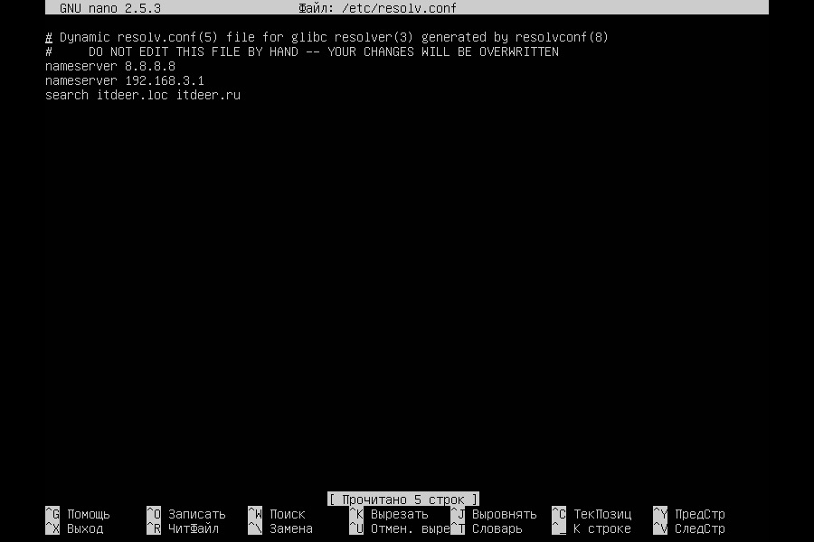Рис.8 - Содержимое файла resolv.conf.
Файл /etc/hosts содержит таблицы сопоставления DNS имен с IP адресами. В первую очередь ваш сервер будет обращаться к файлу hosts, а потом уже к DNS-серверу.
Записи 127.0.0.1 и 127.0.1.1 добавились автоматически при установке.
Лично для себя я отметил полезным внести в hosts запись этого ubuntuserver (IP адрес локальной сети - имя сервера). Теперь мы можем во всех конфигурационных файлах указывать DNS имя, а не IP адрес, а в случае необходимости за кротчайшее время изменить свой IP адрес поправив hosts и настройки интерфейса в /etc/network/interfaces.
Это просто для примера вам этого делать не обязательно.
Приступаю к редактированию(Рис.9):
nano /etc/hosts
Вписываю:
192.168.3.9 ubuntuserver.itdeer.loc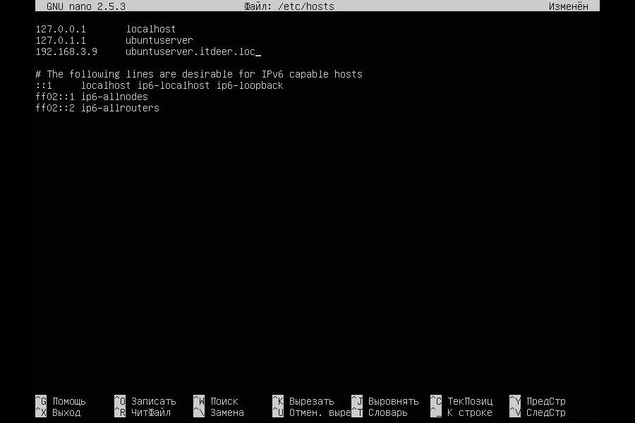Рис.9 - Содержимое файла hosts.
Проверю попинговав имена из hosts.(Рис.10)
ping ubuntuserver.itdeer.loc
ping ubuntuserver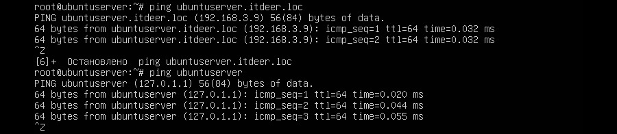Рис.10 - Пингуем имена из hosts.
Временное назначение ip адреса.
Честно говоря я не знаю для чего может пригодиться временное назначение сетевых настроек. Разве что допустим у вас какой-нибудь сервер который предназначен только для вашей локальной сети и вы вдруг решили быстренько обновить ПО через интернет на этом сервере, чтобы не ходить к шлюзу не раздавать интернет на нужный IP адрес итд. Вы можете обойтись парой команд.
Например, мы знаем что на 192.168.3.109 точно есть доступ в интернет, назначаем этот IP адрес нашему интерфейсу, так же нужно указать маску сети(Рис.11):
ifconfig ens33 192.168.3.109 netmask 255.255.255.0
или командой с короткой записью маски сети.
ifconfig ens33 192.168.3.109/24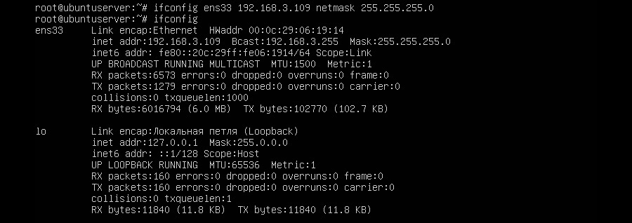Рис.11 - Указание временных настроек для сетевого интерфейса.
Интернет может не появиться, так как не указан шлюз по умолчанию. Прописываем его и пингуем гугловкие восьмёрки.(Рис.12)
route add default gw 192.168.3.1 ens33
ping 8.8.8.8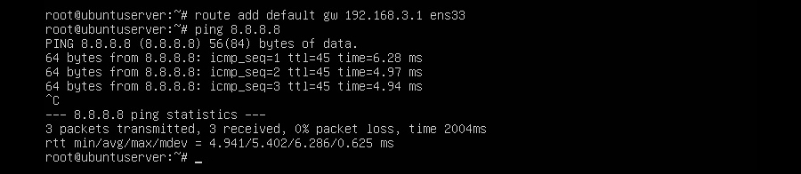Рис.12 - Указываем шлюз по умолчанию. Проверяем ping.
Правильно ли мы прописали наш шлюз по умолчанию можно посмотреть в таблице маршрутизации. Она выводится с помощью команды "route -n", Шлюз по умолчанию будет обозначен флагом UG.(Рис.13)
route -n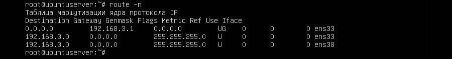Рис.13 - Вывод таблицы маршрутизации.
На этом временная настройка закончена, помните что после перезагрузки сервера или отдельно службы networking, все временные настройки исчезнут.